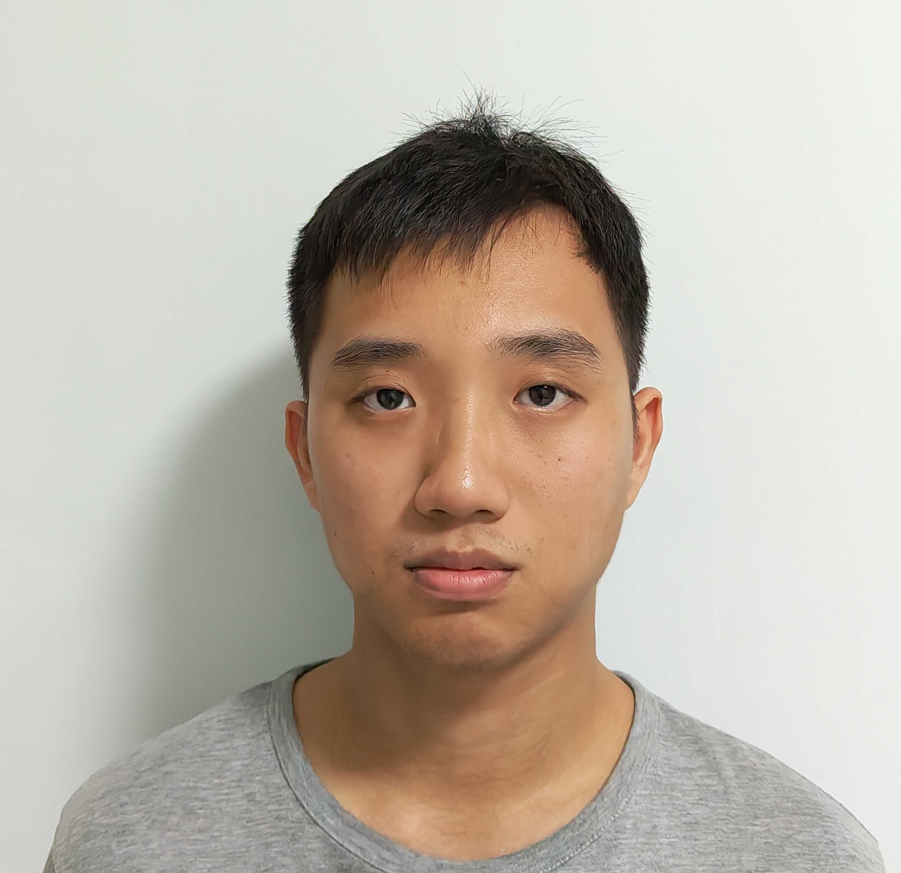

class: middle, center ## CS2030<sub>s</sub> ### Programming Methodology II --- class: middle, center ## Lecture 12 ### 15 April 2024 --- class: middle wide # Almost There :D --- class: middle wide # Announcements --- class: middle wide ### What's left? - Problem Set 9 - Exercise 9 - Catch Up Session IV (Sat 6pm - 8pm) - Final --- class: middle wide ### Exercise 9 - On `CompletableFuture` - Deadline: Friday, 19 April 2024 at 23:59:59. - No late penalty until: Tuesday, 23 April, 2024 at 23:59:59 ### No Self-Diagnostic Quiz this week --- class: middle wide ### Catch-up Session IV - Saturday, 6pm - 8pm, Zoom - Question Link: https://pigeonhole.at/MONADIC --- class: middle wide ### Final Exam - 2 May 2024 at 1:00 PM - Scope: Everything! - Duration: 2 hours - Closed book / Single A4 Sheet - No Calculator --- class: middle wide ### Course Feedback ### We value your feedback! https://blue.nus.edu.sg/blue/ --- class: middle,center  --- class: middle Real-world software is complex, evolves continuously, and is a product of team work. --- class: middle CS2030S teaches you how to write better code, where "better" means: - more human-friendly - easier to change and maintain - fewer crashes through programming paradigms, idioms, and language design. --- class: middle ### Reducing Boiler Plates - Code becomes more succinct and easier to read - Change should happen only in one place --- class: middle ### The Abstraction Principle "Each significant piece of functionality in a program should be implemented in just one place in the source code. Where similar functions are carried out by distinct pieces of code, it is generally beneficial to combine them into one by abstracting out the varying parts." -- _Benjamin C. Pierce_ --- class: middle,wide .smaller[ ```Java String lastName = user.getLastName(); if (lastName == null) { lastName = ""; } show(lastName.toUpperCase()); String firstName = user.getFirstName(); if (firstName == null) { firstName = ""; } show(firstName.toUpperCase()); ``` ] --- class: middle .smaller[ ```Java void handleName(String name) { if (name == null) { name = ""; } show(name.toUpperCase()); } handleName(user.getLastName()); handleName(user.getFirstName()); ``` ] --- class: middle,wide .smaller[ ```Java PhoneNumber phoneNumber = user.getOfficeNumber(); if (phoneNumber == null) { phoneNumber = user.getMainLineNumber(); } save(phoneNumber.toString()); PhoneNumber mobileNumber = user.getMobileNumber(); if (mobileNumber == null) { mobileNumber = user.getMainLineNumber(); } save(mobileNumber.toString()); ``` ] --- class: middle .smaller[ ```Java void handlePhoneNumber(User user, PhoneNumber num) { if (num == null) { num = user.getMainLineNumber(); } save(num.toString()); } handlePhoneNumber(user, user.getOfficeNumber()); handlePhoneNumber(user, user.getMobileNumber()); ``` ] --- class: middle, wide .tiny[ ```Java public static <T> void handle(T item, Producer<T> p, Transformer<T,String> t, Consumer<String> c) { if (item == null) { item = p.produce(); } c.consume(t.transform(item)); } ``` ] --- class: middle, wide .tiny[ ```Java public static void handleName(String name) { handle(name, () -> "", x -> x.toUpperCase(), x -> show(x)); } public static void handlePhoneNumber(User user, PhoneNumber number) { handle(number, () -> user.getMainLineNumber(), x -> x.toString(), x -> save(x)); } ``` ] --- class: middle,wide .smaller[ ```Java int code; Address addr = user.getAddress(); if (addr != null) { if (addr.getCountry().equals("Singapore")) { code = addr.getPostalCode(); } else { code = 0; } } else { code = 0; } ``` ] --- class: middle, wide .tiny[ ```Java public static <T,R> void get(T item, BooleanCondition<T> bc, Transformer<T,R> t, Producer<R> p) { if (item != null) { if (bc.test(item)) { return t.transform(item); } else { return p.produce(); } } else { return p.produce(); } } ``` ] --- class: middle, wide .tiny[ ```Java public static void handleName(String name) { Maybe.of(name) .or(() -> Maybe.of("")) .map(s -> s.toUpperCase()) .ifPresent(s -> show(s)); } public static void handlePhoneNumber(User user, PhoneNumber number) { Maybe.of(number) .or(() -> Maybe.of(user.getMainLineNumber())) .map(p -> p.toString()) .ifPresent(s -> show(s)); } ``` ] --- class: middle, wide .smaller[ ```Java int code = Maybe.of(addr) .filter(a -> a.getCountry().equals("Singapore")) .map(a -> a.getPostalCode()) .orElse(0); ``` ] --- class: middle wide # Writing code that is Extensible --- class: middle wide ## Composition Models the HAS-A relationship --- class: middle wide ## Inheritance Models the IS-A relationship --- class: middle wide ## Polymorphism _many forms_ The ability of objects to take on many forms. --- class: middle wide ## Polymorphism .tiny[ ```Java void say(Object obj) { System.out.println("Hi, I am " + obj.toString()); } Point p = new Point(0, 0); say(p); Circle c = new Circle(p, 4); say(c); ``` ] --- class: middle wide ## Abstract Classes So general that it should not be instantiated. ```Java abstract class Shape { abstract public double getArea(); } ``` --- class: middle wide ## In Python .tiny[ ```python from abc import ABC, abstractmethod class Shape: @abstractmethod def getArea(self): pass class Circle(Shape): def noofsides(self): return ... ``` ] --- class: middle wide ## Interfaces ```Java interface GetAreable { double getArea(); } ``` --- class: middle wide - A class can only inherit from one class (or abstract class). - A class can implement multiple interfaces. - An interface can inherit from multiple interfaces. --- class: middle wide ## Minimizing the effect of changing implementation --- class: middle wide When the client does not know the implementation details of a class/method: - they are not dependent on the specific way it has been implemented. - you can make a change to how something is computed and the client is none the wiser. --- class: middle ## Liskov Substitution Principle (LSP) If $S$ is a subclass of $T$, then an object of type $T$ can be replaced by that of type $S$ without changing the _desirable property_ of the program --- class: middle ## Substitutability _does not_ simply mean "has a subtype relationship". Just because a class inherits from another class does not mean it is substitutable. --- class: middle Recall our `Square` / `Rectangle` example from the recitation. Consider: ```Java Rectangle r1 = new Rectangle(3,3); Rectangle r2 = new Square(3); r1.setHeight(2); r2.setHeight(2); ``` --- class: middle,wide In `Rectangle`: ```Java public void setHeight(double height) { this.height = height; } ``` The desirable property of the method here is to change the height of rectangle. Nothing more, nothing less. --- class: middle,wide In `Square`: ```Java public void setHeight(double height) { this.height = height; this.length = height; } ``` We change both sides of the square. This has changed the desirable property of the method. Can't be substituted, but `Square` $<:$ `Rectangle`. --- class: middle wide ## Spoilers for Software Eng: SOLID Principles LSP is the L. Although we do not cover this in the module, it is good to know about. --- class: middle wide ## Generics Allows us to write re-usable code and still maintain type safety --- class: middle wide Recall our `Pair` class: .tiny[ ```Java class Pair { private Object first; private Object second; public Pair(Object first, Object second) { this.first = first; this.second = second; } Object getFirst() { return this.first; } Object getSecond() { return this.second; } } ``` ] --- class: middle wide and our `Pair<T>` class: .tiny[ ```Java class Pair<S,T> { private S first; private T second; public Pair(S first, T second) { this.first = first; this.second = second; } S getFirst() { return this.first; } T getSecond() { return this.second; } } ``` ] --- class: middle Things to remember about generics: - invariance - contravariance - covariance - PECS (producer extends, consumer super) - the effects of type erasure - Arrays and Generics are not BFFs --- class: middle wide ### Comments Comments Comments  --- class: middle wide # The compiler is your friend! --- class: middle wide Catching errors early (during compile time not during run time) Why is this preferrable? You can catch these problems before they mainfest themselves in the real world. i.e. Autopilot There are of course still errors that occur at run time. --- class: middle wide ## Type Systems are Powerful --- class: middle wide ## Type Safety The compiler checks that all of your types line up correctly and type inference to check that your code is type safe before letting you run it. --- class: middle wide # Handling increasingly complex code --- class: middle wide ## Isolating the moving parts - Encapsulation - Information Hiding - Tell Don't Ask --- ## Encapsulation .tiny[ ```Java class Circle { double x; double y; double r; double getArea() { return 3.141592653589793 * r * r; } } ``` ] --- class: middle wide ## Information Hiding .tiny[ ```Java class Circle { private double x; private double y; private double r; public double getArea() { return 3.141592653589793 * r * r; } } ``` ] --- class: middle wide ## Tell, Don't Ask .tiny[ ```Java double cX = c.getX(); double cY = c.getY(); double r = c.getR(); boolean isInCircle = ((x - cX) * (x - cX) + (y - cY) * (y - cY)) <= r * r; ``` ] vs .tiny[ ```Java boolean isInCircle = c.contains(x, y); ``` ] --- class: middle ### Minimizing the effect of moving parts - Immutability - Nested Encapsulation - Local Classes / Anonymous Classes / Lambdas - Pure functions - Higher Level Abstraction - Monads --- class: middle wide .tiny[ ```Java final class Point { final private double x; final private double y; public Point(double x, double y) { this.x = x; this.y = y; } public Point moveTo(double x, double y) { return new Point(x, y); } } ``` ] --- class: middle wide .tiny[ ```Java final class Circle { final private Point c; final private double r; public Circle (Point c, double r) { this.c = c; this.r = r; } : public Circle moveTo(double x, double y) { return new Circle(c.moveTo(x, y), r); } } ``` ] --- class: middle wide .tiny[ ```Java Point p = new Point(0, 0); Circle c1 = new Circle(p, 1); Circle c2 = new Circle(p, 4); c1.moveTo(1, 1); // c1 remains unchanged ``` ] Don't have the same issue with aliasing! Immutability makes our programs easier to reason about. --- class: middle ## Nested Encapsulation .tiny[ ```Java class Maybe<T> { : private static class Some<T> extends Maybe<T> { : } private static class None extends Maybe<Object> { : } } ``` ] --- class: middle, wide .small[ ```Java Transformer<Integer, Integer> sq = new Transformer<>() { @Override public Integer transform(Integer x) { return x * x; } }; ``` ] --- class: middle, wide .small[ ```Java Transformer<Integer, Integer> sq = x -> x * x; ``` ] --- class: middle ## Pure Functions - deterministic - referential transparency - no side effects? --- class: middlef ## Side Effects Don't: - print to the screen - write to files - throw exceptions - change other variables - modify the values of the arguments --- class: middle,wide ### Building Higher Level Abstractions - `Maybe<T>`: item might be missing - `Lazy<T>`: item is evaluated on demand - `Loggable<T>`: item is logged - `InfiniteList<T>`: items in a lazily-evaluated list - `Seq<T>`: items in an array - `Box<T>`: item in a box --- class: middle,wide ### Monads - `Maybe<T>`: item might be missing - `Lazy<T>`: item is evaluated on demand - `Loggable<T>`: item is logged --- class: middle A monad has two methods `of` and `flatMap` and obeys the three laws on the next slides. --- class: middle,center ### Left Identity Law `Monad.of(x).flatMap(y -> f(y))` is equivalent to `f(x)` --- class: middle,center ### Right Identity Law `monad.flatMap(y -> Monad.of(y))` is equivalent to `monad` --- class: middle,center,wide ### Associative Law `monad.flatMap(x -> f(x)).flatMap(x -> g(x))` is equivalent to `monad.flatMap(x -> f(x).flatMap(x -> g(x)))` --- class: middle ## `Streams` Concentrate on what needs to be computed, don't worry about handling loops. The Java implementation of `InfiniteList`. You have also implemented streams in CS1101S. --- class: middle ### Abstracting out iteration: `Streams` Using stream in place of loops should make our code simpler, more elegant, and less bug-prone. --- class: middle One should note that not all loops can be translated into stream elegantly. - A double-nested loop, for instance, stretches the elegance of streams. - A triple-nested loop should perhaps be best written as a loop with appropriate inner components written with lambdas and streams. --- class: middle ## `Lazy` Be *lazy*. Only do computation when we absolutely must do it, and only do it once! Other functional languages are lazy by default --- class: middle,center # Misc Paradigms and Topics --- class: middle,center # Exceptions --- class: middle,center ## `try`-`catch`-`finally` --- class: middle ```Java try { // do something } catch (an exception parameter) { // handle exception } finally { // clean up code // even if no exception was thrown } ``` --- class: middle,center ## Exception Hierarchy --- background-image: url(figures/cs2030s-lec04/exception/exception.004.png) --- class: middle,center ### Checked vs. Unchecked Exceptions ### Do NOT Use Exception As a Control Flow Mechanism --- class: middle ## Asynchronous Programming Using the `CompletableFuture` class to create pipelines of computation that can be done asychronously. Known in other languages as Futures (python) or Promises (javascript/source) --- class: middle, center # OOP vs FP. Fight! --- class: middle, center We are not telling you "OOP is better" or "FP is better" --- class: middle, center "Here are different ways you can write your code. Pick one that is best for you." --- class: middle - Core strength of OOP is polymorphism (easy to extend) - Core strength of FP is referential transparency (easy to reason about) --- class: middle "OO programming is good, when you know what it is. Functional programming is good, when you know what it is. And functional OO programming is also good, once you know what it is" - Uncle Bob. --- class: middle, center # Java vs. Other Languages --- class: middle,center  --- class: middle, center ### Java is a nice OOP language, but a clunky FP language But, sometimes, you have no choice. --- class: middle ### If you have to use Java, consider other libraries with immutability collections and other monadic constructs - JOOL, Vavr, Fugue - Google Guava - Apache Commons - etc --- class: middle ### If you have other languages to choose from: - *Parallel/Concurrent*: Erlang, Go, etc - *Functional*: Haskell, Erlang, OCaml, F#, etc - *OO Functional*: JS, Kotlin, Scala, Groovy, Switft, etc, --- class: middle, center ### What's Next After CS2030S? --- class: middle, center ### CS2103/T Intro to Software Engineering (and other Software Engineering modules) --- class: middle - work in teams - version control - program analysis - : --- class: middle, center ### CS2104 Concepts of Programming Languages (and other Programming Language modules) --- class: middle - pure functional languages - how to build a compiler - how to implement a language - : --- class: middle, center ### CS3210 Parallel Computing ### CS3211 Parallel and Concurrent Programming (and CS2106 Operating Systems before that) --- class: middle - designing, programming, debugging multi-threaded programs - parallelization with GPU/CUDA - : --- class: middle CS2030S _has taught_ you how to write better code, where "better" means: - more human-friendly - easier to change and maintain - fewer crashes - programming for people... --- class: middle ## People ### It takes a village! --- class: middle, wide ### Lab Tutors <style type="text/css"> .tg {border-collapse:collapse;border-spacing:0;} .tg td{border-color:white;border-style:solid;border-width:1px;font-family:Arial, sans-serif;font-size:14px; overflow:hidden;padding:10px 5px;word-break:normal;} .tg th{border-color:white;border-style:solid;border-width:1px;font-family:Arial, sans-serif;font-size:14px; font-weight:normal;overflow:hidden;padding:10px 5px;word-break:normal;} .tg .tg-0lax{text-align:left;vertical-align:top} </style> <table class="tg"> <tbody> <tr> <td class="tg-0lax">Cheong Sze Kai, Brian</td> <td class="tg-0lax">Kannan Annamalai</td> <td class="tg-0lax">Zhang Puyu</td> <td class="tg-0lax">Narita Yuhi</td> <td class="tg-0lax">Muthukrishnan Santosh</td> <td class="tg-0lax">Tey Cheng Jun</td> </tr> <tr> <td class="tg-0lax">Kok Chun Zhi</td> <td class="tg-0lax">Keagan Pang Zhong Hon</td> <td class="tg-0lax">Jiang Bowei</td> <td class="tg-0lax">Alissa</td> <td class="tg-0lax">Phinehas Faithful Tan</td> <td class="tg-0lax">Kumar Prabhat</td> </tr> <tr> <td class="tg-0lax">Li Zhong Fu</td> <td class="tg-0lax">Kurt Lee Yi Jie</td> <td class="tg-0lax">Tan Hong Jun</td> <td class="tg-0lax">Ryan Ong Wei Xian</td> <td class="tg-0lax">Puri Virakarin</td> <td class="tg-0lax">Sim Han Kiong</td> </tr> <tr> <td class="tg-0lax">Ryan Reno Lim</td> <td class="tg-0lax">Kyal Sin Min Thet</td> <td class="tg-0lax">Bach Le Tuan Khai</td> <td class="tg-0lax">Aprup Kale</td> <td class="tg-0lax">Rayner Toh Jing Xiang</td> <td class="tg-0lax">Sumanth Yalamarty</td> </tr> <tr> <td class="tg-0lax">Shen Yi Cui</td> <td class="tg-0lax">Lam Jiu Fong</td> <td class="tg-0lax">Tung Zhi Yong Ian</td> <td class="tg-0lax">Carsten Joe Ng</td> <td class="tg-0lax">Soo Jun Neng</td> <td class="tg-0lax">Jonas Ong Si Wei</td> </tr> <tr> <td class="tg-0lax">Soh Soon Wei</td> <td class="tg-0lax">Lee Chun Jie</td> <td class="tg-0lax">Ong Zhi Li</td> <td class="tg-0lax">Chan Wei Hao</td> <td class="tg-0lax">Timothy Putra Prasetio</td> <td class="tg-0lax">Teo Zheng Yang</td> </tr> <tr> <td class="tg-0lax">Tan Sze Ying</td> <td class="tg-0lax">Leonidas Raghav</td> <td class="tg-0lax">Chandan Ananda Babu</td> <td class="tg-0lax">Chew Jun Heng</td> <td class="tg-0lax">Titus Chew Xuan Jun</td> <td class="tg-0lax">Tan Yiming</td> </tr> <tr> <td class="tg-0lax">Tan Yuanzheng</td> <td class="tg-0lax">Lian Zhi Xuan</td> <td class="tg-0lax">Eu Chang Xian</td> <td class="tg-0lax">Guo Yuheng</td> <td class="tg-0lax">Toh Li Heng</td> <td class="tg-0lax">Kum Chai Yin</td> </tr> <tr> <td class="tg-0lax">Toh Li Yuan</td> <td class="tg-0lax">Lim Jian Yang</td> <td class="tg-0lax">Shaun Lee Xuan Wei</td> <td class="tg-0lax">Jason Baek</td> <td class="tg-0lax">Xing Lingxi</td> <td class="tg-0lax">Lim Jun Han, Alvin</td> </tr> <tr> <td class="tg-0lax">Wong Chee Hong</td> <td class="tg-0lax">Loh Jian Rong</td> <td class="tg-0lax">Wang Zhi, Wren</td> <td class="tg-0lax">Julius Bryan Reynon Gambe</td> <td class="tg-0lax">Yap Yuhang</td> <td class="tg-0lax">Nguyen Khoi Nguyen</td> </tr> </tbody> </table> --- class: middle #### Recitation Tutors </style> <center> <table class="tg"> <thead> <tr> <th class="tg-baqh">Enzio Kam Hai Hong</th> <th class="tg-baqh">Han Meng</th> <th class="tg-baqh">Tan Yugin</th> </tr> </thead> <tbody> <tr> <td class="tg-baqh"><center></center></td> <td class="tg-baqh"><center></center></td> <td class="tg-baqh"><center></center></td> </tr> </tbody> </table> </center> --- #### System Admin <center> <table class="tg"> <thead> <tr> <th class="tg-baqh">Tan Hsiao Wei</th> <th class="tg-baqh">Musa B Hashim</th> <th class="tg-baqh">Chan Tim Fook</th> <th class="tg-baqh">Chong Peng Kong</th> </tr> </thead> <tbody> <tr> <td class="tg-baqh"><center><img width="200" src="https://www.comp.nus.edu.sg/stfphotos/tanhw.jpg"></center></td> <td class="tg-baqh"><center><img width="200" src="https://www.comp.nus.edu.sg/stfphotos/musa.jpg"></center></td> <td class="tg-baqh"><center><img width="200" src="https://www.comp.nus.edu.sg/stfphotos/chantf.jpg"></center></td> <td class="tg-baqh"><center><img width="200" src="https://www.comp.nus.edu.sg/stfphotos/chongpk.jpg"></center></td> </tr> </tbody> </table> </center> ### and many many more! --- class: middle, center # You ___This module will not have___<br> ___been a success without you!___ --- class: middle wide "Always code as if the guy who ends up maintaining your code will be a violent psychopath who knows where you live” __John Woods__ --- class: middle,center ## The End --- class: bottom .tiny[ Version: v1.0 Last Updated: Sun Apr 14 20:00:00 +08 2024 ]